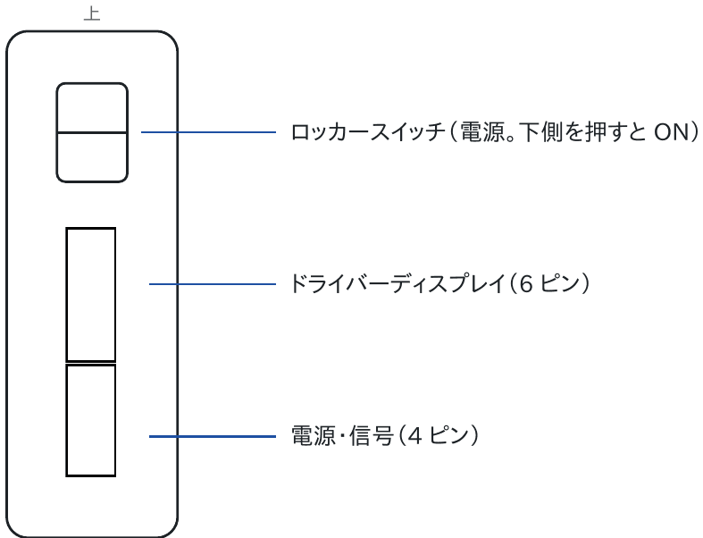
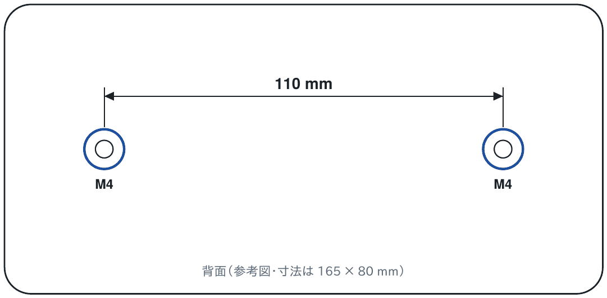

CHAPTER 01安全上のご注意
CHAPTER 02ARM Rally Computer について
ARM Rally Computer は、JAF 公認競技「第 1 種アベレージラリー」を、より手軽に楽しんでいただくために開発した専用機器です。部品点数を抑え、ツイントリップメーターにアベレージラリーの計算機能を加えた形で提供します。
決して分かりやすいとはいえない第 1 種アベレージラリーですが、ARM Rally Computer が、少しでも皆様がアベレージラリーを楽しむ手助けになれば幸いです。
主な機能
| 機能 | 内容 |
| 3 系統のトリップ | コマ図走行用のメイントリップ（Trip A）と、2 系統のサブトリップ（Trip B・エキストラトリップ）。 |
| CP・PC からの距離 | 直前の CP からの距離（CP Trip）と、直前の PC からの距離（PC Trip）をリアルタイムで確認できます。 |
| ファイナルタイム | 指示速度（AVE）に対する自車の早遅を、時間で表示します。 |
| 履歴 | Trip A・Trip B と、CP／PC 間の距離の履歴を確認できます。 |
| 距離の補正 | 補正値 0.0001〜2.9999。 |
| 車速パルス | 2・4・6・8 パルスから選べます。 |
| 明るさ | 3 段階。 |
| ドライバーディスプレイ | 別売りオプション。ドライバーのオンタイム走行や、コマ図間の距離の確認を手助けします。 |
内容物
本体、取扱説明書（本書）、保証書、ドライバーディスプレイ（オプションをご注文の場合のみ）
CHAPTER 03各部の名前
| 番号 | 名前 | はたらき |
| 1 | E ボタン | 入力の開始・決定。CP Trip・PC Trip のホールド、エキストラトリップのクリア。CLOCK 表示で長押しすると時計合わせ。 |
| 2 | PC ボタン | 速度変更地点（PC）で押します（11 章）。 |
| 3 | CP ボタン | スタートラインやチェックポイント（CP）、OD 地点で押します（10 章）。 |
| 4 | 上段表示 | CLOCK・START Time・AVE Speed・REST Control・CP Trip・PC Trip・EX Trip を切り替えて表示。 |
| 5 | 中段表示 | ファイナルタイム、または Trip B。 |
| 6 | 下段表示 | Trip A（コマ図間の距離の確認に使うのがおすすめです）。 |
| 7 | 早遅ランプ | 中段の左。緑：先行（早い）、赤：遅れ。 |
| 8 | 進行方向ランプ（青） | 下段の左。消灯：前進、点灯：停止、点滅：後退。 |
| 9 | 赤ランプ | 上段の左。START Time の表示中に点滅します。 |
| 10 | モード一覧 | 上段に表示できる項目の一覧。 |
| 11 | LOG / m ボタン | 短押し：履歴表示。長押し：距離の単位（1 m ⇔ 10 m）。 |
| 12 | SELECT ボタン | 短押し：中段の表示切替（ファイナルタイム ⇔ Trip B）。長押し：設定（明るさ・車速パルス）。 |
| 13 | C ボタン（中段） | Trip B のクリア。設定中は明るさの切替。 |
| 14 | C ボタン（下段） | Trip A のクリア。設定中は車速パルスの切替。 |
| 15 | CALIB ボタン | 距離の補正。時計合わせの決定。 |
| 16 | 進行方向レバー（F／N／R） | つまみ上げて切り替えます。F：前進、N：停止、R：後退。 |
| 17 | 左右レバー | 上段の表示切替。入力中は桁の移動。 |
| 18 | 上下レバー | 数値の増減。履歴の切替。長押しで入力の補助（6 章）。 |
右側面と背面については 4 章・16 章をご覧ください。
CHAPTER 04車両との接続
右側面には、上から次の 3 つがあります。

電源・信号の配線（4 ピン）
| 色 | 用途 | 接続先 |
| 赤 | DC12V | ヒューズを通して車両の DC+12V へ。ヒューズは 1 A を使用してください。 |
| 黒 | GND | 車両のボディ（アース）へ |
| 桃 | 車速信号 | 車両の車速信号（車速パルス）へ |
| 黄 | リバース信号（自動バック） | 後退時に DC+12V が出る配線（バックランプの＋側など）へ。自動バックを使うときだけ接続します。 |
電源の入れ方
右側面のロッカースイッチの下側を押すと ON、上側を押すと OFF です。
CHAPTER 05表示の見かた
上段
左右レバーで、次の項目を順に切り替えます（右で次へ、左で前へ）。
| 項目 | 内容 | 表示例 |
| CLOCK | 現在の時刻（時.分.秒、24 時間表示）。 | 12.36.58 |
| START Time | 直前に CP または PC を押した地点のスタート時刻。表示中は上段左の赤ランプが点滅します。 | 12.30.00 |
| AVE Speed | 現在の指示速度（km/h、0.1 km/h 単位）。 | AVE36.0 |
| REST Control | レスコン時間（分.秒）。CP までの合計です（13 章）。 | rc 1.30 |
| CP Trip | 直前の CP からの距離。先頭に「C」。E ボタンでホールド（点滅）／解除。 | C 12.345 |
| PC Trip | 直前の PC からの距離。先頭に「P」。E ボタンでホールド（点滅）／解除。 | P 2.345 |
| EX Trip | エキストラトリップ。先頭に「E」。常に 1 m 単位。E ボタンでクリア。 | E 45.678 |
EX Trip が 100 km を超えると、「E」の位置に 100 km の桁を表示します。
中段
ファイナルタイム（9 章）と Trip B を、SELECT ボタンで切り替えます。電源を入れたときはファイナルタイムです。左の早遅ランプは、Trip B を表示しているときもファイナルタイムの状態（緑：先行、赤：遅れ）を表します。
下段
Trip A を表示します。コマ図間の距離の確認に使うのがおすすめです。
ランプ
| ランプ | 場所 | 意味 |
| 早遅ランプ（緑・赤） | 中段の左 | 緑：先行（指示速度より早い）。赤：遅れ。 |
| 進行方向ランプ（青） | 下段の左 | 消灯：前進。点灯：停止。点滅：後退（6 章）。 |
| 赤ランプ | 上段の左 | START Time の表示中に点滅。 |
CHAPTER 06基本操作
数値の入力
ARM Rally Computer は、価格を抑えるためにテンキーを使っていません。数値は上下・左右レバーで入力します。
| 操作 | はたらき |
| 上下レバー | 点滅している桁の数値を増やす（上）／減らす（下） |
| 左右レバー | 入力する桁を移動 |
点滅している部分が、入力・変更できる部分です。
入力の補助（上下レバーの長押し）
| 入力中の項目 | 上に長押し | 下に長押し |
| スタート時刻 | 次の分の 00 秒（例：12.30.05 → 12.31.00） | 同じ分の 00 秒（例：12.30.05 → 12.30.00） |
| レスコン | 秒を ＋10 秒 | 秒を −10 秒 |
進行方向の切り替え
本体前面の中央下にある進行方向レバー（F／N／R）を、つまみ上げて切り替えます。状態は、下段の左の進行方向ランプ（青）でも確認できます。
| レバー | 距離の計測 | 進行方向ランプ |
| F（前進） | 加算 | 消灯 |
| N（停止） | 計測しない | 点灯 |
| R（後退） | 減算 | 点滅 |
自動バック（黄の配線を接続しているとき）
リバースギアに入れて黄の配線に DC12V が来ている間は、F と R のはたらきが入れ替わります。前進のつもりでレバーを F にしたまま後退しても、自動で距離を差し引きます。
| レバー | リバースギアのとき | 進行方向ランプ |
| F | 減算 | 点滅 |
| N | 計測しない | 点灯 |
| R | 加算 | 消灯 |
進行方向ランプは、実際の計測の状態（加算・停止・減算）を表します。
距離の表示単位
LOG / m ボタンを長押しするたびに、Trip A・Trip B の表示が 1 m 単位と 10 m 単位で切り替わります。エキストラトリップ・CP Trip・PC Trip は常に 1 m 単位です。
| 単位 | 表示 | 例 |
| 1 m | 0.000〜9.999 km（10 km 以上は上の桁を表示しません） | 12.345 km → 2.345 |
| 10 m | 0.00〜99.99 km | 12.345 km → 12.34 |
マイナスの距離
Trip A が 0 m より少なくなる（マイナスになる）と、下段の右端の下のドットが点灯します。数値に「−」は付きませんので、ご注意ください。
計算の端数について
内蔵マイコンの仕様により、計算結果の小数第 6 位まで「9」が続いた場合は、1 つ切り上げられます。
| 計算結果（秒） | 処理 |
| 43.9999998 | 44 秒 |
| 43.999998 | 43 秒 |
CHAPTER 07時計合わせと設定（明るさ・車速パルス）
時計合わせ
スタート前に、オフィシャルの基準時計と時刻を合わせます。
- 上段を CLOCK にします。
- E ボタンを長押しすると時計合わせになり、時の桁が点滅します。
- 上下レバーで数値、左右レバーで桁（時・分・秒）を選び、少し先の時刻を入力します。
- 基準時計がその時刻になった瞬間に CALIB ボタンを押します。ボタンを離したタイミングで登録されます。
登録せずにやめるときは、E ボタンを長押しします。
明るさと車速パルスの設定
- SELECT ボタンを長押しすると設定になります。上段は時計、中段に明るさ（L）、下段に車速パルス（P）を表示します。
- 中段の C ボタンを押すたびに、明るさが 3 段階（0・1・2）で切り替わります。
- 下段の C ボタンを押すたびに、車速パルスが 2 → 4 → 6 → 8 → 2 … と切り替わります。
- SELECT ボタンを押すと、元の表示に戻ります。
CHAPTER 08トリップのクリア
ARM Rally Computer には複数の距離計があり、それぞれ別のタイミングでクリアできます。
Trip A（下段）
- 下段の C ボタンを押すと、押した時点の距離が点滅表示になります。距離はその時点で 0 に戻り、裏では 0 から計測を続けています。
- 点滅している距離を控えたら、もう一度下段の C ボタンを押します。表示が計測中の距離に戻ります。
Trip B（中段）
- 中段の C ボタンを押します。ファイナルタイムを表示していても、Trip B の表示に切り替わり、押した時点の距離が点滅表示になります。距離はその時点で 0 に戻ります。
- もう一度中段の C ボタンを押すと、元の表示（ファイナルタイムまたは計測中の Trip B）に戻ります。
エキストラトリップ（上段の E）
上段を EX Trip にして E ボタンを押すと、その時点から 0 で計測を始めます。点滅表示はありません。
CHAPTER 09ファイナルタイム
正しく操作すると、指示速度（AVE）に対する早遅を時間で表示します。これをファイナルタイムと呼びます。自車と主催者の計測距離が同じ（補正が合っている）場合、ファイナルタイムが 0.0 になるように走ります。
表示のしかた
| 早遅の差 | 表示 | 例 |
| 1 分未満 | 秒（0.1 秒単位） | 12.3（12.3 秒） |
| 1 分〜10 分未満 | 分.秒（0.1 秒は表示しません） | 1.05（1 分 5 秒） |
| 10 分以上 | 分.秒 | 12.05（12 分 5 秒） |
早遅ランプが緑なら先行（早い）、赤なら遅れです。遅れが 10 分未満のときは、数値の前に「−」も付きます。
CHAPTER 10CP（スタート・チェックポイント・OD）
ラリーのスタートラインや、競技中のチェックポイント（CP）ラインで行う操作です。
CP の基本操作
- CP ラインで CP ボタンを押します。上段がスタート時刻の入力になり、CP ボタンを押した時刻（秒まで）が入っています。秒の桁が点滅します。
- CP からのスタート時刻（CP カードの時刻など）に合わせて、E ボタンを押します。
- 上段が指示速度（AVE）の入力になります。CP からの AVE を入力して、E ボタンを押します。
- 上段が CLOCK に戻り、CP の処理は終わりです。CP Trip・PC Trip・レスコンは 0 から始まります。
スタート時刻・AVE の修正
- 左右レバーで、上段を START Time または AVE Speed にします。
- E ボタンを押すと入力になります。
- 数値を直して E ボタンを押すと、修正は終わりです。
OD での操作
ラリーのスタート後に設定されたオドメーターチェックポイント（OD 地点など）で、補正値を求めて登録する操作です。
- OD ラインに車両を止めます。
- 左右レバーで上段を CP Trip（C）にして、E ボタンを押します。CP Trip がホールド（点滅）されます。余裕があれば、ここで距離を控えてください。
- CP ボタンを押します。ここからは車両を動かしてもかまいません。
- OD 地点からの再スタート時刻と、OD からの AVE を入力します（CP の基本操作と同じ）。
- 上段を CP Trip に切り替えます。2 でホールドした OD までの距離が点滅していますので、確認したら E ボタンを押します。ホールドが解除され、OD からの距離の表示になります。
- ノーチェック区間の終わりなど、安全な場所で補正値を入力します（12 章）。
CHAPTER 11PC（速度変更・時間走行）
PC の基本操作
主催者が設定した速度変更地点（PC）で行います。
- PC 地点で PC ボタンを押します。上段が AVE の入力になります。
- 新しい AVE を入力して、E ボタンを押します。
- 上段が CLOCK に戻り、PC の処理は終わりです。PC Trip は 0 から始まります。
時間走行
「●● 図から ×× 図まで 20 分で走行せよ」という指示が出ることがあります。このときの操作です。
- 時間走行の開始地点（●● 図）で PC ボタンを押します。
- その区間のおよその AVE を入力して、E ボタンを押します。あらかじめ「区間の距離 ÷ 所要時間」で計算しておくとよいでしょう。分からない場合は、制限速度程度（40 km/h など）を入力します。
- 左右レバーで上段を START Time にします。表示されている時刻が、開始地点の通過予定時刻です。メモしてください。
- 余裕のあるときに、3 の時刻に指示された所要時間を足して、終了地点（×× 図）の通過予定時刻を計算しておきます。
- 終了地点まで速やかに移動し、終了地点で PC ボタンを押します。
- 終了地点からの AVE を入力して、E ボタンを押します。
- 上段を START Time にして E ボタンを押し、4 で計算した通過予定時刻を入力して、E ボタンを押します。以上で時間走行の処理は終わりです。
5 では、PC ボタンの代わりに CP ボタンを使っても同じ結果になります。ここでは「時間走行も PC（速度変更地点）の一つ」という基本を理解するために、PC ボタンで説明しています。
CHAPTER 12距離の補正
主催者の距離（コマ図・ロードブックの距離）に対して、自車の距離（ARM Rally Computer の表示）を補正できます。補正値は自分で計算して入力します。
（CALIB = ARM / ROAD BOOK）
- 上の式で、補正値（小数第 4 位まで）を計算しておきます。
- CALIB ボタンを押すと、上段が補正値の入力（c）になります。
- 上下レバーで数値、左右レバーで桁を選び、計算した補正値を入力します。
- CALIB ボタンを押すと、補正値が登録されて元の表示に戻ります。
例：主催者の距離 10.000 km の区間で、Trip が 10.200 km だった場合、10.200 ÷ 10.000 ＝ 1.0200 です。
CHAPTER 13レストコントロール（レスコン）
ラリー中は、主催者からレストコントロール（レスコン）が与えられることがあります。指示された場所や区間で、休憩（レスト）のために一定の時間を加えて走るものです。
- 左右レバーで上段を REST Control（rc）にします。
- E ボタンを押すと入力になります。
- レスコンを「分.秒」で入力します。例：1 分 30 秒なら 1.30。秒の入力中は、上下レバーの長押しで 10 秒ずつ増減できます。
- E ボタンを押すと、レスコンが登録されます。
例：次の CP までに「1 分 00 秒」と「2 分 30 秒」が与えられたら、3.30 を入力します。そのあと、安全のために自主的に 1 分 30 秒のレスコンを取った場合は、合計の 5.00 を入力し直します。
CHAPTER 14履歴表示
ナビゲーターの作業を助けるため、次の距離を一時的に記録しています。
| 履歴 | 記録のタイミング | 件数 |
| Trip A | 下段の C ボタンでクリアしたとき | 100 件 |
| Trip B | 中段の C ボタンでクリアしたとき | 50 件 |
| CP／PC 間の距離 | CP・PC の処理をしたとき。CP は「C」、PC は「P」を先頭に表示 | 最新 49 件 |
Trip A・Trip B は、上限に達すると最後の 1 件が上書きされます。CP／PC 間の距離は、いっぱいになると古いものから消えます。電源を切ると、履歴はすべて消えます。
履歴の見かた
- LOG / m ボタンを短く押します。上段に CP／PC 間の距離、中段に Trip B、下段に Trip A の履歴を表示します。
- 最初は、まだ記録のない次の位置（「----」）を表示しています。上下レバーを下げると新しいものから古いものへ、上げると新しいほうへ戻ります。
- もう一度 LOG / m ボタンを押すと、元の表示に戻ります。
履歴の表示中も、CP ボタン・PC ボタンは使えます。
CHAPTER 15ドライバーディスプレイ（別売りオプション）
ドライバーディスプレイを使うと、ドライバーの前にファイナルタイムまたは Trip A を表示できます。
接続
- ドライバーディスプレイのコネクタを、右側面の 6 ピンコネクタに差し込みます。
- 本体の電源を入れます。
電源が入ったあとに接続しても、約 1 秒で表示が始まります。表示されないときは、上段が CLOCK のときに上下レバーを下に長押ししてください。
表示
| 表示 | 切り替え | ランプ |
| ファイナルタイム（初期状態） | 上段が CLOCK のときに、上下レバーを上に長押し | 緑：先行、赤：遅れ |
| Trip A | 同上（もう一度長押しで戻る） | Trip A の表示中もファイナルタイムの早遅を表示 |
CP・PC の処理中は、本体と同じくファイナルタイムをホールド表示します。
CHAPTER 16取り付け

背面に、取り付け用のナットが 2 か所埋め込まれています。ステーやマウントにボルトで固定できます。
| 項目 | 内容 |
| ボルト | M4 |
| ボルトの長さ | 取り付ける部分（ステーなど）の板厚 ＋ 10 mm まで |
| ナットの間隔 | 110 mm（中心間） |
CHAPTER 17主な仕様
| 項目 | 内容 |
| 外形寸法 | 幅 165 × 高さ 80 × 奥行 27 mm（ボタン・レバーなどの突起部を除く） |
| 電源電圧 | DC10〜15V（DC12V 車専用） |
| 消費電流 | 最大 約 500 mA |
| 使用温度 | −10〜50 ℃ |
| 距離 | 車速信号による計測。車速パルス 2・4・6・8。補正値 0.0001〜2.9999 |
| 表示単位 | Trip A・Trip B：1 m／10 m 切替。CP Trip・PC Trip・エキストラトリップ：1 m |
| 記憶 | 明るさ・車速パルス（補正値・履歴は電源を切ると消えます） |
| 接続 | 右側面：電源・信号 4 ピン（DC12V・GND・車速信号・リバース信号）、ドライバーディスプレイ 6 ピン |
| 取り付け | 背面 M4 ナット 2 か所（間隔 110 mm） |
| 別売りオプション | ドライバーディスプレイ |
CHAPTER 18GPS 版について
GPS 版は、車速信号の代わりに GPS で距離を測るモデルです。基本の機能と操作は、この説明書の車速信号版と同じです。違いは次のとおりです。
| 項目 | 車速信号版 | GPS 版 |
| 距離の計測 | 車速信号 | GPS |
| 電源 | 右側面 4 ピン（DC12V） | 右側面 4 ピン（赤・黒の DC12V のみ）、または左側面 USB-C（5V） |
| 車速信号線・リバース線 | あり（桃・黄） | なし |
| 距離の微調整 | — | 右上の上下レバーで ±10 m |
CHAPTER 19競技での操作の流れ
スタート前
- 時計をオフィシャルの基準時計に合わせる（7 章）。
- SELECT ボタンを長押しして、明るさと車速パルスを確認し、SELECT ボタンで戻る。
- CALIB ボタンを押して、補正値が 1.0000 になっていることを確認し、CALIB ボタンで戻る。
スタートラインで
- 中段・下段の C ボタンを押して Trip A・Trip B をクリアする（もう一度押して点滅を解除）。
- 上段を EX Trip にして E ボタンを押し、エキストラトリップをクリアする。
- スタートの瞬間に CP ボタンを押し、自車のスタート時刻を入力して E ボタン。
- スタートからの AVE を入力して E ボタン（時間走行の指示なら、計算した平均速度）。
- 進行方向レバーを F（前進）にする。
コマ図地点で
- 後続車に気をつけながら、可能なら停止する。
- 下段の C ボタンを押し、点滅している距離を控える。
- もう一度下段の C ボタンを押して、計測中の表示に戻す。
CP ライン通過時（CP ライン上では停止しない）
- CP ラインを通過する瞬間に CP ボタンを押す。
- 計時車両の横まで速やかに移動し、オフィシャルから CP カードを受け取る。
- CP カードのスタート時刻と表示中の時刻を確認し、違っていれば直して E ボタン。
- CP からの AVE を入力して E ボタン。
PC 地点で
- PC ボタンを押す。
- 新しい AVE を入力して E ボタン。
OD 地点で
- OD ライン上で停止し、上段を CP Trip にして E ボタンでホールドする。
- CP ボタンを押し、OD 地点からのスタート時刻と AVE を入力する。
- OD 地点がコマ図地点なら、下段の C ボタンで Trip A をクリアする。
- 安全な場所で、CP Trip のホールドを E ボタンで解除し、補正値を計算して入力する（12 章）。
CHAPTER 20操作早見表
| 操作 | 短く押す | 長押し |
| E ボタン | 入力の開始・決定／CP Trip・PC Trip のホールド／EX Trip のクリア | CLOCK 表示で時計合わせ（もう一度でやめる） |
| CP ボタン | CP の処理 | — |
| PC ボタン | PC の処理 | — |
| SELECT | 中段の切替（ファイナルタイム ⇔ Trip B）／設定から戻る | 設定（明るさ・車速パルス） |
| LOG / m | 履歴表示／履歴から戻る | 1 m ⇔ 10 m |
| CALIB | 補正値の入力・登録／時計合わせの登録／CP の取り消し | — |
| C（中段） | Trip B のクリア（点滅）・点滅の解除／設定中：明るさ | — |
| C（下段） | Trip A のクリア（点滅）・点滅の解除／設定中：車速パルス | — |
| 左右レバー | 上段の表示切替／入力中：桁の移動 | — |
| 上下レバー | 数値の増減／履歴の切替 | スタート時刻：00 秒に切上げ（上）・切捨て（下） レスコン：±10 秒 CLOCK 表示：ドライバーディスプレイの切替（上）・再表示（下） |
| 上段の表示 | E ボタン |
| CLOCK | 短：なし／長：時計合わせ |
| START Time・AVE Speed・REST Control | 入力の開始・決定 |
| CP Trip・PC Trip | ホールド ⇔ 解除 |
| EX Trip | クリア |
アニメーションで操作を確認できるマニュアルもあります：manual.rally-arm.com
CHAPTER 21保証とお問い合わせ
保証について
- 製品には保証書が同梱されています。保証書は、製造元が発送日を記入した時点で有効になります。お客様情報を所定の欄にご記入のうえ、大切に保管してください。保証書の再発行はいたしません。
- 保証期間は、保証書に記載の発送日から 6 か月です。
- 保証期間内は、保証書の無料保証規定に基づいて無償で修理します。規定に当てはまらない場合は、保証期間内でも有料修理となります。
- 保証期間を過ぎた製品は、修理できる状態の場合に限り、有料で修理します。
- お客様から製造元への発送にかかる送料と、取り付け・取り外しの工賃はお客様のご負担です。修理後に製造元からお客様へ発送する送料は製造元が負担します。製品が製造元に届いたあと修理できないと分かった場合も、送料は同じ扱いとします。
- 製品を取り付ける車両の情報は、製造元からは提供しておりません。
製造元・お問い合わせ先
| ARM products | |
| 代表 | 入夏 高志 |
| 住所 | 茨城県つくば市森の里 63-8 |
| 電話 | 090-3682-4017 |
| URL | http://www.rally-arm.com |
| info@rallymonitor.com |
ブラウザで操作を試せるシミュレーターもあります：シミュレーターを開く